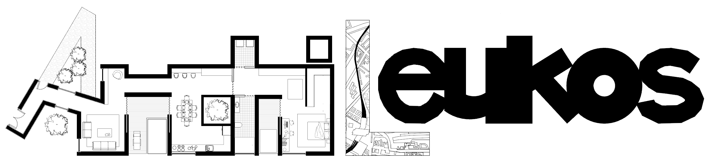

“La arquitectura no sólo cubre todos los campos de la actividad humana, tiene incluso que desarrollarse en todos esos campos al mismo tiempo. Si no ocurre así, obtenemos solamente resultados unilaterales y superficiales”
Aalto, A. (1940, noviembre). La humanización de la arquitectura. The Technology Review, 14–15.
Archi (arquitectura, inglés) + λευκός (luz, griego antiguo) nace como la intención de explorar el impacto de los espacios, ya sea a nivel urbano o de edificio, en la sociedad. Para ello se ha de vincular la arquitectura con las personas, incluyendo a estas últimas como piezas esenciales en el proceso creativo. La observación de la variedad de la sociedad actual ayuda a entender mejor qué tipo de diseños son adecuados para evolucionar positivamente nuestra forma de construir y la funcionalidad de los espacios. Este análisis del efecto de los diseños en los usuarios permite generar nuevas leyes o métodos de diseños que mejoren la calidad de vida. Mi objetivo es crear arquitectura que sea capaz de escuchar tanto al entorno como a los usuarios para dar la mejor experiencia posible siendo óptima.